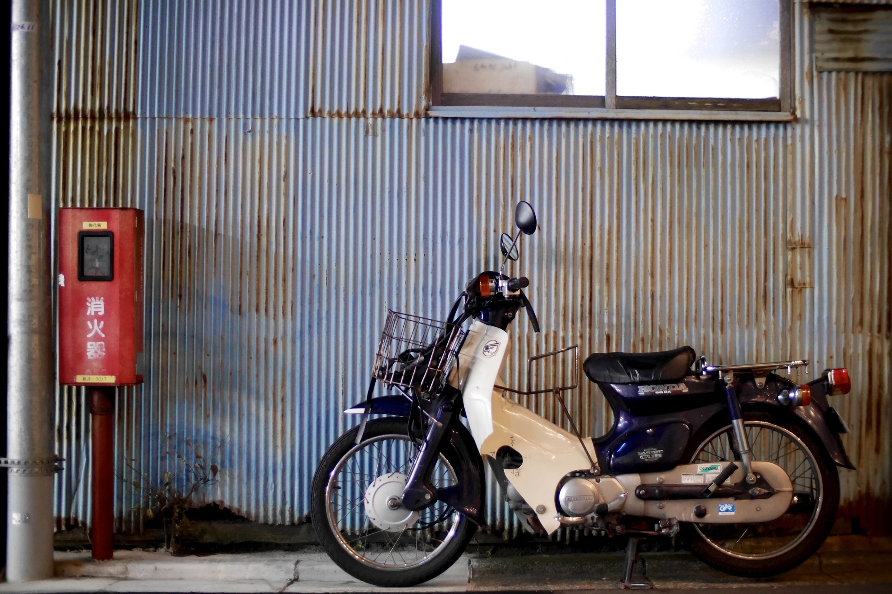
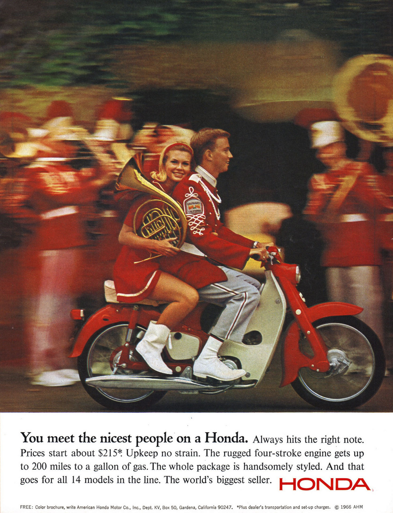

일본 혼다에서 1958년부터 생산 중인 소형 오토바이로, 60여 년의 세월 동안 무려 1억 대가 생산된 혼다의 스테디셀러이다. 한국의 그 유명한 대림 씨티 시리즈도 커브의 라이센스 판인데 비슷한 컨셉과 성능을 가진 라이센스 제품들그리고 비라이센스 짝퉁까지 포함하면 수억 대는 만들어져서, 전세계에서 24시간 동안 쉬지 않고 달리고 있는 오토바이라고 할 수 있다. 커브 시리즈는 첫 세대를 제작한 이후 60년이 넘어가기까지 세부 구조만 좀 바뀌었을 뿐, 큰 구조는 단 한 번도 바뀐 적이 없다.
혼다기연공업 주식회사에 의하면 슈퍼 커브 시리즈의 생산 대수는 2008년 4월 말 기준으로 총 6,000만대(라이센스 생산 제외)에 달하고 수송용 기기의 시리즈로서는 세계 최다양산 및 판매 대수를 기록하고 있다.
20세기 후반의 모터리제이션 역사상 사륜자동차 분야의 T형 포드나 폭스바겐 비틀에 필적하는 공헌을 남긴 이륜차이다.